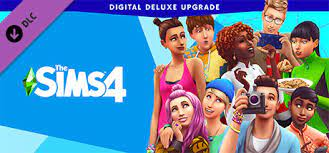

Simuliatoriai
Simuliatoriai yra žaidimai, kurie siekia tiksliai atkurti realaus pasaulio veiklas ar situacijas. Tai gali būti įvairių sričių simuliacijos, nuo skrydžių ir automobilių vairavimo iki miesto statybos ir gyvenimo simuliacijų. Populiariausi simuliatoriai:
- The Sims - gyvenimo simuliatorius, kuriame žaidėjai kuria ir valdo personažus, statydami namus, formuodami jų gyvenimus ir įgyvendindami jų troškimus.
- Flight Simulator - skrydžių simuliatorius, leidžiantis žaidėjams pilotuoti įvairius lėktuvus ir skristi po visą pasaulį, atkuriant realistiškas skrydžio sąlygas.
- Cities: Skylines - miesto statybos simuliatorius, kuriame žaidėjai kuria ir valdo miestus, sprendžia infrastruktūros problemas ir siekia užtikrinti gyventojų gerovę.
- Farming Simulator - ūkininkavimo simuliatorius, kuriame žaidėjai valdo savo ūkius, augina pasėlius, prižiūri gyvulius ir parduoda produkciją.
Simuliatoriai dažnai suteikia žaidėjams galimybę patirti realistiškas situacijas ir lavinti specifinius įgūdžius. Jie gali būti tiek realistiški, tiek labiau pramoginiai, priklausomai nuo žaidimo tikslo.